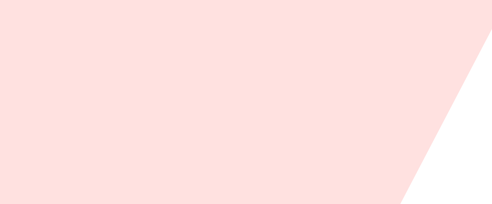
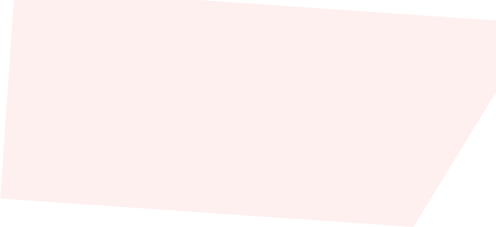
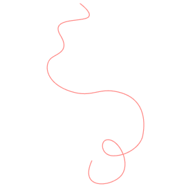
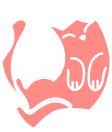

Doe amor,
doe o seu lar!
Adote um gatinho
Quero Adotar
Apoie e colabore para que mais gatinhos encontrem uma família


+1.2 mil gatinhos adotados em 2024

+305 protetores
apoiados durante o ano
+80 toneladas de ração doadas desde 2023
+2.1 mil castrações
de gatos realizadas